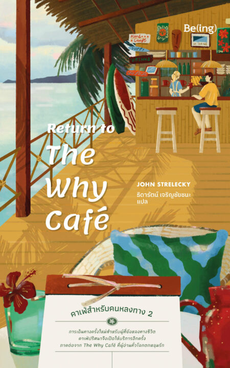
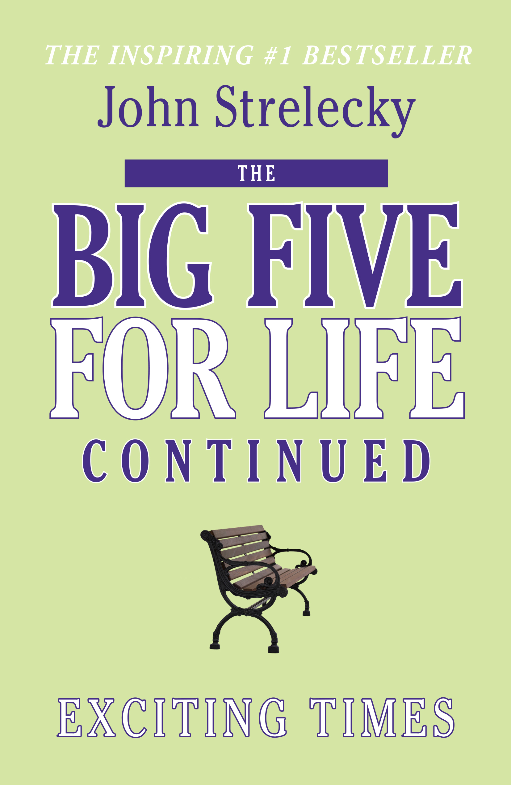

เรื่องย่อ:
'จอร์น'ชายหนุ่มที่เหน็ดเหนื่อยกับชีวิต เขาจึงลาพักร้อนและออกเดินทางเผื่อพักผ่อนที่ริมทะเล แต่แล้วเขาเจอกับที่เรื่องไม่คาดฝันระหว่างขับรถเขาใช้เส้นทางที่ไม่คุ้นเคยจนหลงทางในที่สุด เขาได้พบร้านคาเฟ่ที่ตั้งอยู่โดดเดี่ยว โดยร้านมีชื่อว่า The Why Are You Here Cafe จอร์นจึงแวะเข้าไปโดยหวังว่าจะได้พักและตั้งหลักหาทางใหม่
และนี้เป็นจุดเริ่มต้นที่ทำให้เขาได้เจอกับคำถาม3ข้อ
คำถามเหล่านี้ที่ทำให้จอร์นได้ใคร่ครวญถึงชีวิตในตอนนี้ และทำให้เขารู้ถึงความหมายที่แท้จริงของการมีชีวิตอยู่ หนังสือเล่มนี้จะพาเราร่วมออกเดินทางและค้นหาคำตอบไปพร้อมกับจอร์น
1. Return to The Why Cafe
2. The Big Five For Life
 Return to The Why Cafe คาเฟ่สำหรับคนหลงทาง 2
สำนักพิมพ์being
The Why Cafe คือหนังสือแห่งแรงบันดาลใจ และถึงเวลาแล้วสำหรับการเดินทางครั้งใหม่กับ Return to The Why Cafe พบกับร้านคาเฟ่และตัวละครที่คุ้นเคยกับเรื่องราวที่เข้มข้นยิ่งขึ้น แต่อบอุ่นหัวใจเช่นเคย
The Big Five For Life
สำนักพิมพ์ Aspen Light